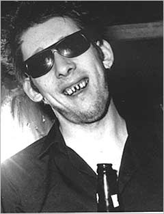

Irlandés
 De: La Frikipedia, la enciclopedia extremadamente seria.
De: La Frikipedia, la enciclopedia extremadamente seria.
Habitantes de la isla de Irlanda y parte de los Estados Unidos de América
Seres tan amargados que o se emborrachan o te cuentan su vida de cuando eran jovenes, y, años atras raptaban princesas.
Divisiones
 Un oriundo en su habitat natural
Están divididos entre irlandeses del norte (seguidores del betis) e irlandeses (sevillistas), pero se comportan de forma parecida.
Esta división surgió por que los irlandeses ganaron la UEFA y la Supercopa de Europa, y estos le echaron en cara al otro equipo de la isla de que habían ganado. Los de Irlanda del norte cabreados y apoyados por los equipos ingleses rompieron el estado en dos quedandose con la parte mas fértil y pequeña de la isla, en la cual criaban patatas , por supuesto, para licores.
A los irlandeses del norte les gustaba pegarse tiros con sus pistolas, por que había bandas de sevillistas que querían la unión con el resto de Irlanda. Mientras que algunos béticos recibían palos, otros se organizaban apoyados por los equipos ingleses y sus pistolas para hacerles frente, y formar parte del Reino Unido
Gustos
- Les gustan las cervezas negra, la roja, la de frambuesa, la de fresa, la de mierda, la de buey almizclero, la de pelo de bigote, de malta, la de jabón, la de leche, la de uva, la de azúcar, la de alcohol de 96 grados...
- No les gustan las demás bebidas alcohólicas que no sean cervezas, a no ser que se les haya dicho que es cerveza.
- Les gustan las 25 de diciembre.
- Les gusta celebrar sus fiestas regionales porque hay alcohol.
- Les gusta ir al trabajo con dos copazos de whisky.
- Les gustan las patatas.
- Les gustan los licores de patata o de manzana.
- A parte de la población de Irlanda del Norte le gustaría formar parte de la asociación nacional del rifle.
- A las chicas jóvenes les encanta enseñar a la peña los michelines, la barriga y las piernas jamonas.
Rasgos característicos
Normalmente esta especie humana tienen la cara roja y muchas pecas, si se ponen al sol el cuerpo se les quema poco a poco hasta crear un olor característico parecido al de la goma.
- Su personalidad es:
- Amables hasta cierto punto, critícan a las demás nacinalidades según como les caigan (a los españoles nos acusan de inquisidores, y a los estadounidenses de personas maravillosas), ellos por supuestos son los mejores.
- Cabezones, si les enseñaron a sumar con los dedos no son capaces de hacerlo con un papel.
- Egocentrícos, si no les a pasado a ellos no creen que pueda existir, vease cualquier enfermedad (menos las sexuales, entonces aplican el: más vale prevenir que curar).
- No son fantasiosos, a no ser, que crean que les puede pasar a ellos.
- Recreativos, quiero decir que se recrean en su pasado, y no solo contentos con eso, te lo cuentan.
- Su herejes, a no ser que puedan alardear de ello delante de cualquiera. Véase el ejemplo de: "yo una vez le deje a una señora negra sentarse en un autobus"
- Ideología política: son todos conservadores, empezando por el centro y acabando por cualquier lado.
Grandes personajes
- Bono (cantante de (U2)
- Oscar Wilde
- George Best (futbolista de Irlanda del Norte)
- Danny Boy
- Margaret Kelleher Flynt
Ejemplo de un "irlandés"
- Suelen trabajar en institutos mediocres, aunque no tengan titulación.
- No diferencian el masculino del femenino al hablar el español. Ejemplos:
- 50 es cincuento, se le puede confundir con que no tiene un cuento ( ? ).
- "La violencio no lleva a ningún lado"
- También creen en el Calentamiento del Universo, en vez del global.
- ODIAN A LOS JAPONESES.
- No dejan ver peliculas en horas como "estudio" (horas dedicadas al placer y el jolgorio) ya que el alumno al que le tiene manía trae peliculas que a su parecer "no son apropiadas", solo porque dice: "chupame el huevo izquierdo"
- No le gusta las buenas peliculas como "V for Vendeta".
- Tienen nombres como Rachel, Anne o Margaret y apellidos como Gnome, whisky o Kelleher.
- Le gustan los pollos de goma
- Producen sonidos de ovejas al pronunciar palabras que atenten con su religión.
- Repiten una serie de palabras hasta el aborrecimiento, ejemplos: OK, right, let´s go y toda la familia léxica del verbo "to fuck"(En una ocasión se conatabilzaron 200 de estas palabras en 20 minutos.)
- Suelen tener ojos en la nuca, que les permite ver si hay gente en el servicio para no dejarte ir.
Autor(es):
- Xlony
- Juaniyo
- Seymour M
- Mikko
- Mel-o
Frikipedia 2005-2016, Licencia
GFDL 1.2 - Extraído por FrikiLeaks